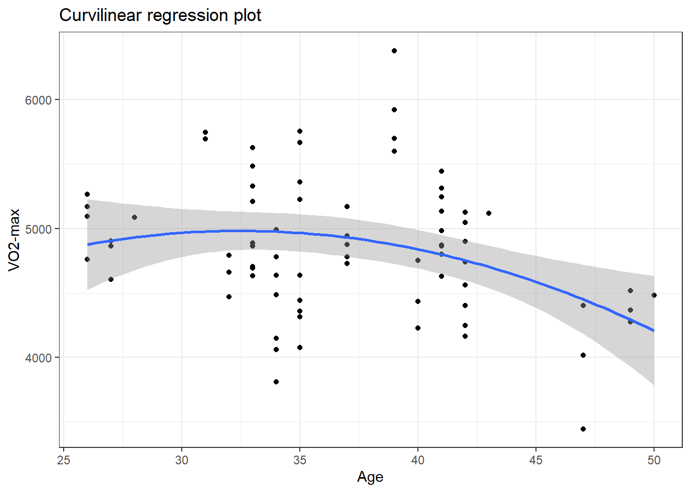
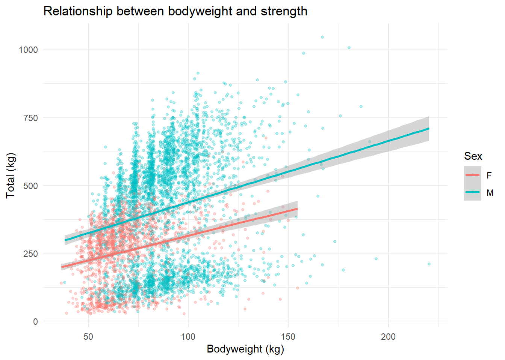
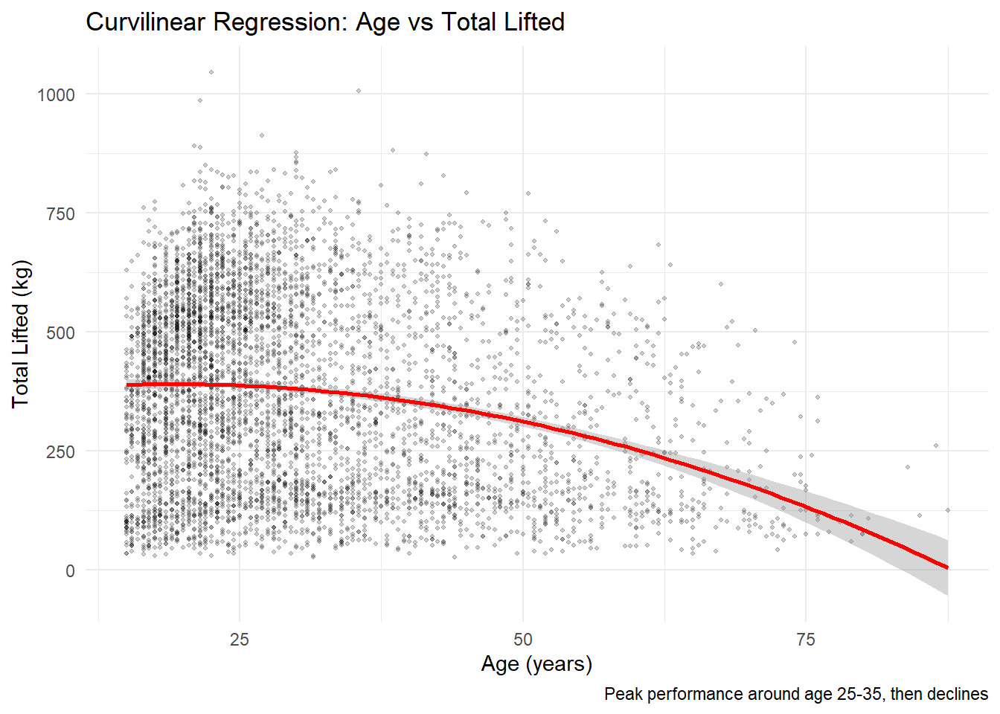
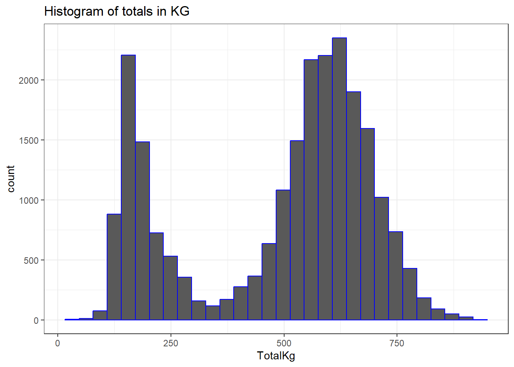
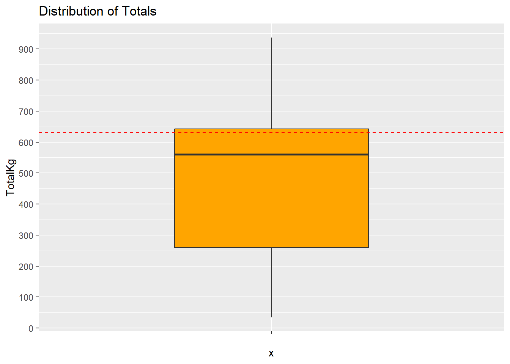

Rows: 3675423 Columns: 42
── Column specification ────────────────────────────────────────────────────────
Delimiter: ","
chr (19): Name, Sex, Event, Equipment, AgeClass, BirthYearClass, Division, ...
dbl (22): Age, BodyweightKg, Squat1Kg, Squat2Kg, Squat3Kg, Squat4Kg, Best3S...
date (1): Date
ℹ Use `spec()` to retrieve the full column specification for this data.
ℹ Specify the column types or set `show_col_types = FALSE` to quiet this message.
Introduction
This post explains what I learned about regression analysis.
Linear Regression
All graphs and functions will be based on the following data sets: cyclingstudy, openpowerlifting
A linear model or function is used to predict the outcome of y (dependent variable), based on the value of x (the independent variable). A linear model is best fitted for variables which have a linear relationship. An example of this would be VO2-max and height, with height being the independent variable and VO2-max being the dependent variable.
It can be described using the function seen below in R. This function essentially states that VO2-max is dependent on height, and we are using a data set to base this function of. We will then get an ‘intercept’ and your slope. More precisely, we can say that this is your regression coefficient.
The linear regression function in R is the following:
linear.function <-lm(y ~ x, data = my.data)
Once we’ve gotten the values of the intercept and slope, we can predict values of y with any value of x.
Curvilinear Regression
This is essentially a function that describes the non-linear relationship between variables. This is a more fitting function to use, if we want to say compare the relationship of age on VO2-max. The relationship will most likely not be linear, as beyond a certain age your VO2-max will most likely regress.
This is described with the following R function:
curvilinear.function <-lm(y ~ x +I(x^2), data = my.data)
ggplot(cyclingstudy, aes(x = age, y = VO2.max)) +geom_point() +geom_smooth(method ="lm", formula = y ~ x +I(x^2)) +labs(title ="Curvilinear regression plot",x ="Age",y ="VO2-max" ) +theme_bw()

Ideally we would like a more visually striking difference between the two graphs. In this case, it looks like a linear regression would still be the best fit for age and VO2-max, as it seems their relationship is mostly linear. Therefore, we will be taking a closer look at the “Openpowerlifting” data set, containing lifting information from millions of lifters across decades of competitions, alongside other variables.
Examining linear and curvilinear regressions with the “Openpowerlifting” data set
This data set contains well over 3 millions rows, and 42 variables. To make this data set more manageable to work with (and less computer-intensive), I will be cleaning up the data set and only choosing a sample from that cleaned-up version to present graphs and functions with. Since the samples will still be incredibly large, we can be fairly confident that we will still get a result that is generalisable to the entire data set.
#Let's take a look at our datadim(openpowerlifting)
[1] 3675423 42
#Lets clean up the datapowerlifting_clean <- openpowerlifting |>filter( Age >=15& Age <=90, #Reasonable age ranges!is.na(Dots), #Has a DOTs score!is.na(TotalKg), #Recorded a total TotalKg >0, Equipment =="Raw", #Competed RAW, not equipped!is.na(BodyweightKg), #Weight class Sex %in%c("M", "F"),!is.na(Tested) #Drug-tested only )#Take a random sample of the cleaned up dataset.seed(123)sample.data <- powerlifting_clean |>sample_n(5000)cat("Sample size", nrow(sample.data), "rows\n")
Sample size 5000 rows
Now that we’ve cleaned up the data, we need to figure out which variables we want to assess. An easy one is how bodyweight in KG affects your totalKg, with bodyweight being the independent variable, and the total being the dependent variable. We can reasonably assume that these two variables will have a linear relationship, as bigger people tend to be stronger.
#Linear regression functionm <-lm(TotalKg ~ BodyweightKg, data = powerlifting_clean)#How much does your total increase by going from 90 to 100kg?y2 <-predict(m, newdata =data.frame(BodyweightKg =90))y1 <-predict(m, newdata =data.frame(BodyweightKg =100))difference <- y1 - y2cat("Increase:", round(difference, 1), "kg\n")
Increase: 32.8 kg
#Lets plot the relationship between the variablesggplot(sample.data, aes(x = BodyweightKg, y = TotalKg, color = Sex)) +geom_point(alpha =0.3, size =1) +geom_smooth(method ="lm", se =TRUE) +theme_minimal() +labs(title ="Relationship between bodyweight and strength",x ="Bodyweight (kg)",y ="Total (kg)" )
`geom_smooth()` using formula = 'y ~ x'

Unsurprisingly, we can see a fairly linear relationship between body weight and total amount of weight lifted. There is however a lot of variance in this data set, as one would expect as it compiles data from hobbyista competing for their first time to world-class lifters.
Let’s examine how DOTS is affected by age, and if this shows a curvilinear relationship. In simple terms, DOTS is a mathematical equation that takes both weight lifted and body weight into account, producing a score that makes comparison between different weight classes possible. Whether DOTS is the fairest way to do this, is another can of worms and somewhat controversial. However, we might excpect there to be a peak around age 30 - 40 for DOTS, before it dips as we get older. Let’s take a look.
#Lets take the same sample data and look at a curvilinear relationshiplm(Dots ~ Age +I(Age^2), data = powerlifting_clean)
Call:
lm(formula = Dots ~ Age + I(Age^2), data = powerlifting_clean)
Coefficients:
(Intercept) Age I(Age^2)
282.16792 1.45536 -0.05137
ggplot(sample.data, aes(x = Age, y = TotalKg)) +geom_point(alpha =0.2, size =0.8) +geom_smooth(method ="lm", formula = y ~ x +I(x^2), color ="red", size =1) +labs(title ="Curvilinear Regression: Age vs Total Lifted",x ="Age (years)",y ="Total Lifted (kg)",caption ="Peak performance around age 25-35, then declines" ) +theme_minimal()
Warning: Using `size` aesthetic for lines was deprecated in ggplot2 3.4.0.
ℹ Please use `linewidth` instead.

Exploring other things in the data set
Curiosity got the better of me, and I would like to see how I stack up with lifters in my same age and weight bracket.
powerlifting.me <- powerlifting_clean |>filter( BodyweightKg >=90& BodyweightKg <=100, Sex =="M", Age >=25& Age <=30 )# Histogramggplot(powerlifting.me, aes(x = TotalKg)) +geom_histogram(color ="blue") +labs(title ="Histogram of totals in KG" ) +theme_bw()
`stat_bin()` using `bins = 30`. Pick better value with `binwidth`.

# Boxplotggplot(powerlifting.me, aes(x ="", y = TotalKg)) +geom_boxplot(fill ="orange", width =0.5) +geom_hline(yintercept =630, color ="red", linetype ="dashed") +scale_y_continuous(breaks =seq(0, 900, by =100)) +labs(title ="Distribution of Totals")

As we can see here, a total of above 650kg puts you above the 75th percentile of competitive powerlifters. Unfortunately for me, I’m not quite there yet as you see by the red dashed line (total of 630 kg).
Summary
We have looked at both linear and multilinear regressions. Next time, I’m going to explore multiple regressions.